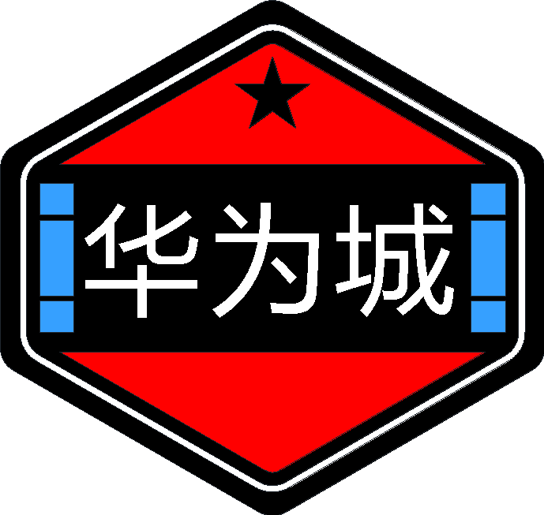
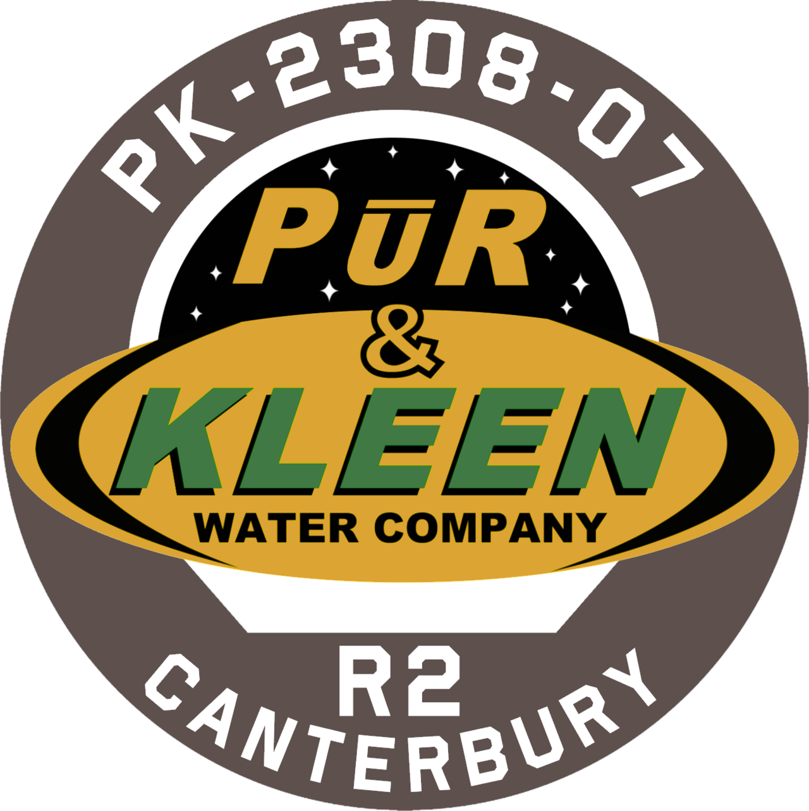

A historia da OPA basicamente se inicia com a origem da expansão da Humanidade nos planetas exteriores do Sistema Solar e também no cinturão de asteróides.
A origem dos humanos ocorreu no planeta Terra, mas sempre houve a idéia de querer conhecer as estrelas, o primeiro mundo que os humanos começaram a colonizar foi a Lua, que inicialmente pertencia a ONU (Organização das Nações Unidas). As politicas internacionais, com as consequências que já ocorriam na Terra como tensões de guerras, aquecimento global e entre outros gerou uma decisão que trouxe a unificação política na Terra coordenada pela então ONU, e assim, poderia se discutir verdadeiramente como resolver os problemas que tinham na Terra.
Durante esses períodos, entre os séculos XXII e XXIII ocorreu a colonização de Marte e inicialmente a do cinturão de asteróides que primeiramente foi usado asteróides para obter recursos como água, minérios e entre outros. Marte como pertencente a ONU em seu início de colonização passou a ser mais próspera do que a própria Terra, as tensões de relacionamento entre Terra e Marte aumentaram e logo depois Marte se tornou independente da Terra dando origem a MCR (República Congrenacional Marciana), um governo parlamrntarista, que juntamente com 4 bilhões de marcianos possuem o objetivo de terraformar Marte.
A colonização humana no Sistema Solar quando já estava perto da independencia de Marte só tinha chegado ao asteróide Eros, mas depois de uma revolução de propulsão de naves denominada Epstein Drive, os planetas exteriores como Júpiter e Saturno não foram mais um desafio de chegada, com isso outros mundo foram colonizados por humanos.
Inicialmente as pessoas que viviam no cinturão de asteróides pertenciam a Terra no contexto de direitos, mas com a independencia de Marte as tensões entre Terra e Marte cresceram e por consequência as pessoas que estavam no cinturão de asteróides começaram a ser meio que "esquecidas" por ambos os mundos, e com isso passaram a ser menos valorizados. Décadas se passaram, muitos incidentes em lugares como Eros e até em naves geraram maiores rumores para uma guerra interplanetária entre Terra e Marte.
Com isso as pessoas dessas regiões de baixa gravidade e que viviam dificilmente para seu sustento resolveram se unir para lutar pela sua liberdade como nação, e por consequência ambas as potências do Sistema Solar ainda dependem dos recursos do cinturão e do trabalho dos Belters que deu início a organização que durante boa parte da série dá um bom exemplo de proletariado contra a burguesia.
O vídeo abaixo mostra o trailer da série, e que de modo geral retrata o que acontece nela: